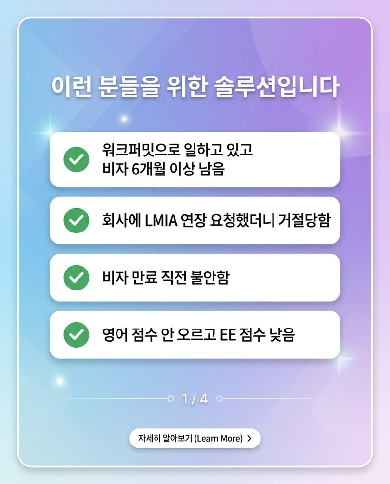

“아직 비자 6개월 남았으니 괜찮겠지?” — 이미 늦기 시작했습니다 (영주권 골든타임 잡는 법)

"아직 비자 6개월 넘게 남았으니까 괜찮겠지?"… 죄송하지만, 이미 늦기 시작했습니다.
지금 캐나다 워크퍼밋으로 일하면서 "설마 고용주가 LMIA 연장 안 해주겠어?" 하고 막연하게 버티고 계신가요?
안일한 기대는 내려놓으셔야 합니다. 비자 만료 2~3개월 전에 닥쳐서 발 동동 굴러봐야, 고용주가 "미안하지만 이번엔 어렵다" 한마디 던지면 끝입니다. 그땐 손쓸 시간도 없이 한국행 비행기표를 알아봐야 합니다.
경력 단절 없이, 고용주 눈치 안 보고, 당당하게 캐나다에 살아남을 수 있는 마지막 골든타임은 바로 비자가 '6개월 이상' 남은 지금입니다!
🔥 "사장님, 제발 LMIA 한 번만…" 언제까지 을(乙)로 살 생각입니까?
회사의 노예처럼 눈치 보며 사정할 필요 전혀 없습니다. 서류 복잡하고 비용도 많이 드는 LMIA 대신, 고용주의 뒷통수를 탁 치는 역제안 치트키를 던지세요!
💬 "사장님, 저 불어 점수(NCLC 5) 따오겠습니다. 사장님은 귀찮은 서류 다 건너뛰고 단돈 $230만 내세요. 일은 지금처럼 영어로 똑같이 하겠습니다."
정부 사이트에서 서류 몇 개 누르고 $230만 내면 유능한 직원을 합법적으로 계속 쓸 수 있는데, 어떤 고용주가 이걸 마다하겠습니까? 을(乙)의 처지에서 순식간에 '갑(甲)의 제안'을 하는 능력자가 되는 방법, 바로 프랑코폰 모빌리티입니다.
🚀 익스프레스 엔트리(EE) 점수판 보고 한숨만 쉬는 당신에게

남들 영어 0.5점 올리려고 피눈물 흘릴 때, 불어 구사자 전용 선발(Category-Based Draws)이라는 압도적으로 낮은 치트키 커트라인을 타고 영주권 직행 열차로 갈아타세요. 일은 영어로 하고, 영주권은 불어로 받는 것이 가장 똑똑한 캐나다 생존 전략입니다.
⏳ 시간은 지금도 흐르고 있고, 기회는 딱 한 번뿐입니다.
비자가 1~2개월 남아서 찾아오시면 저희도 도와드릴 방법이 없습니다. 불어 시험을 보고 비자를 전환하는 데 필요한 최소한의 물리적 시간이 바로 '6개월'입니다.
고민하며 시간 낭비할 때, 누군가는 이미 골든타임을 잡고 영주권 막차에 올라타고 있습니다. 더 이상 불안해하며 밤잠 설치지 말고, 지금 바로 확실한 생존 로드맵을 받아 가세요!
📞 캐나다 영주권 골든타임 심폐소생 문의
📞 전화 문의: 778-258-2223
💬 카톡 문의: 오픈채팅 바로가기
📍 위치: #130 – 1140 Austin Ave, Coquitlam, BC (정철 애프터스쿨)